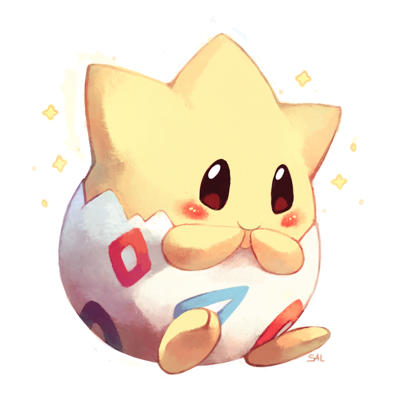

Description
L'énergie vitale de Togepi provient des émotions positives et heureuses exprimé par les gens et les Pokémons. On dit même que sa coquille est remplie de joie. Si jamais il ne ressent que haine et désespoir, il finit par mourir. « Qui fait tenir debout un Togepi endormi aura la chance pour lui… »
Caractéristique
- N° : #175
- Type : Fée
- Sexe : M/F
- Taille : 0.3m
- Poids : 1.5kg
Capacités spéciales
- Sérénité : Double la réussite aux effets des attaques lancées.
- Agitation : Augmente votre attaque de 50% mais baisse votre précision de 20%.
- Chanceux : Le taux de coup critique du Pokémon est augmenté d'un niveau.